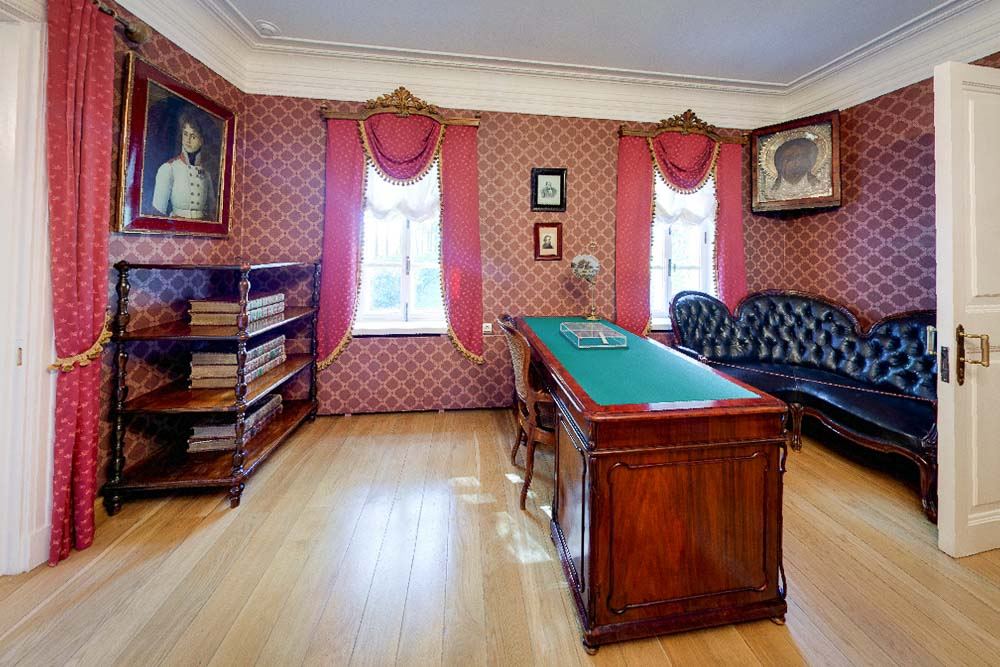
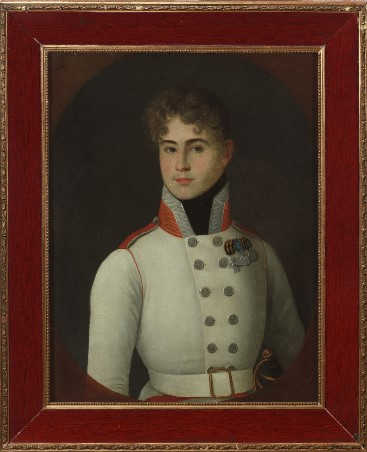
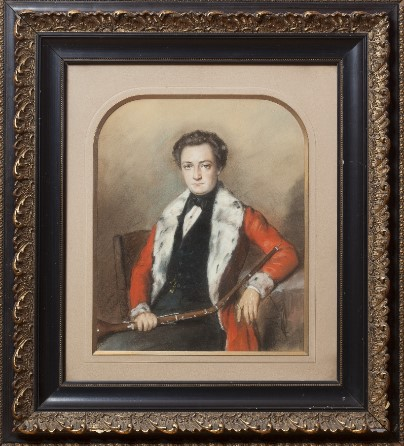
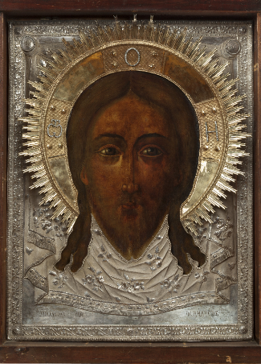
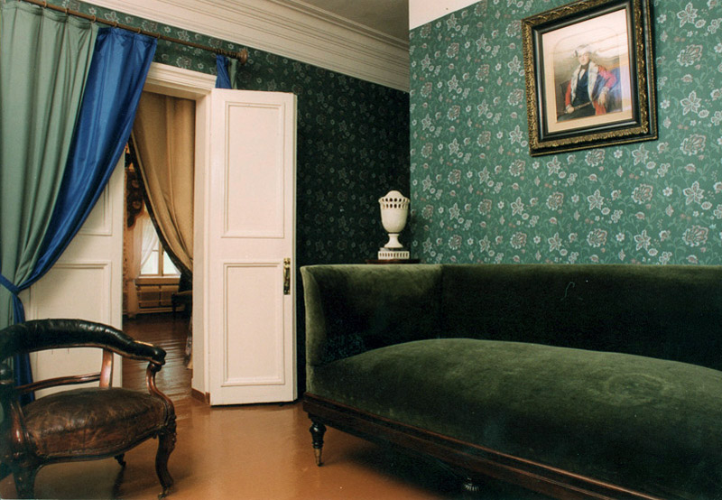
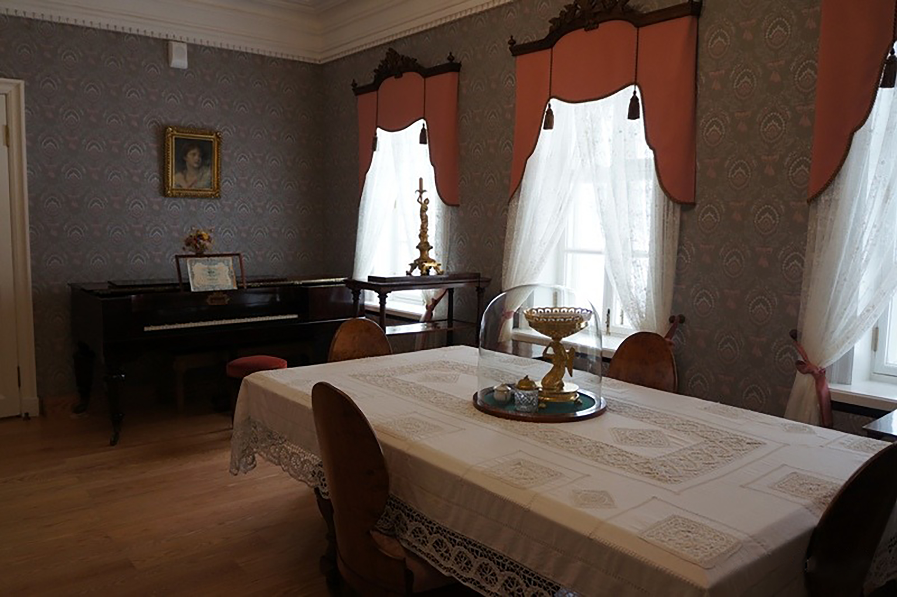
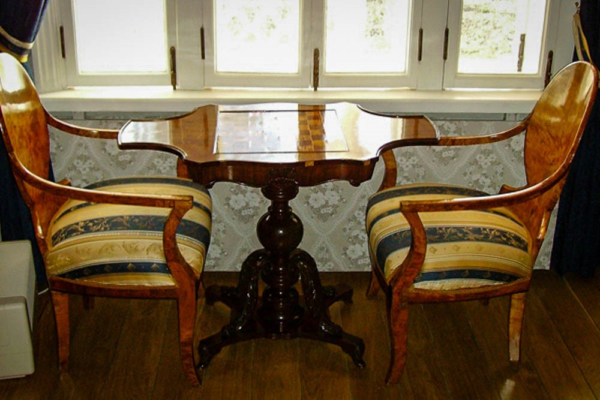
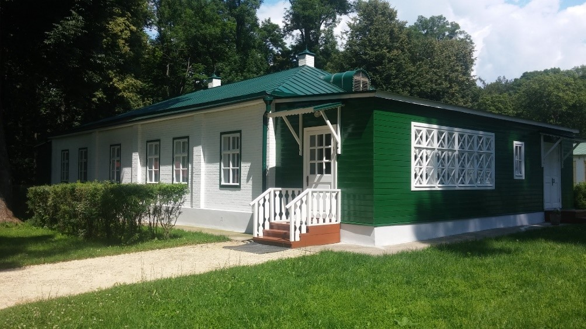
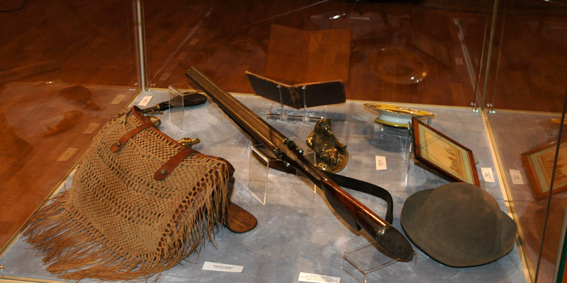
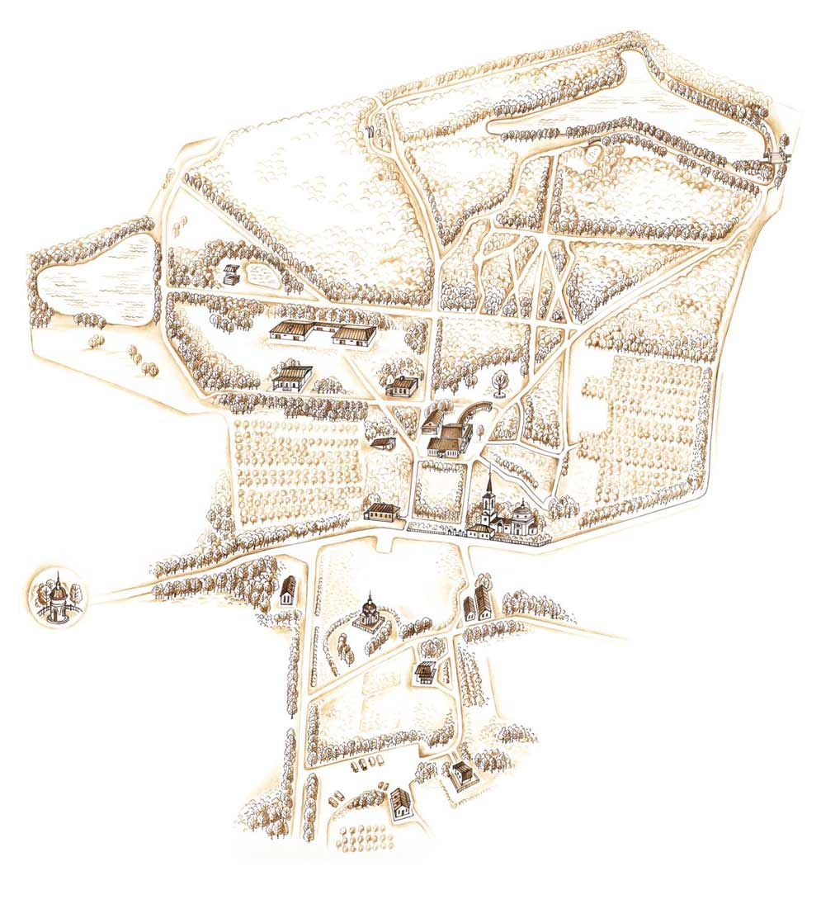

В конце XVI века Иван Грозный пожаловал село Ивану Лутовинову двоюродному деду И. С. Тургенева, который создал на этой территории усадьбу: её центром стал двухэтажный деревянный, обложенный кирпичом дом (с библиотекой, театром и хорами для музыкантов), перед ним были разбиты цветники, рядом стояли каменная галерея, кухня, баня, скотный двор, птичий двор, кузница, столярный флигель и мельница, больница, флигель для полиции, лаборатория.
Это уникальный памятник культуры, единственный в России мемориальный музей великого русского писателя И.С. Тургенева, созданный 22 октября 1922 года. Дом представляет собой лишь одно крыло первоначального главного дома усадьбы, выстроенного И. И. Лутовиновым в первом десятилетии XIX века. В 1839 году большая часть дома сгорела. От пожара уцелело лишь левое, юго-западное крыло дома. Оставшийся после пожара левый флигель был капитально отремонтирован и стал служить главным домом усадьбы.
Дом писателя, сгоревший в 1906 году, восстановлен на прежнем месте и в том виде, каким застал его Иван Сергеевич в свой последний приезд на родину, летом 1881 года - резные узорчатые веранды, утопающие в зелени плюща, маленькие окошки мезонина и крылечки, анфилада комнат и их внутреннее убранство — весь облик дома помогает проникнуться духом тургеневского времени. В обстановке дома — мебель, являющая собой лучшие образцы работы русских мастеров 18 — первой половины 19 веков.
Это рабочая комната писателя, место, где он оставался наедине со своими творческими раздумьями, где создавались его важнейшие произведения. Облик этой комнаты сложился уже в 1850-е годы, вскоре после смерти матери Тургенева и почти не менялся во время приездов сюда писателя. На письменном столе ручка писателя (к концу жизни он писал уже не гусиным, а стальным пером. Над столом- портреты В.Г. Белинского и М.С. Щепкина.

В кабинете над этажеркой висит портрет отца писателя, Сергея Николаевича Тургенева, написанный в 1813 г. Неизвестным художником. Об этом портрете Иван Тургенев писал: «Портрет моего отца в форме унтер-офицера кавалергардского полка. Красивый молодой человек, немножко слишком полный, белый, розовый, небольшой тонкий нос, какие-то детские голубые глаза, красиво изогнутые брови, пробивающиеся усики, пепельно-белокурые волосы, ниспадающие на лоб по моде того времени. На груди георгиевский крест: он был тяжело ранен в Бородинском сражении, за что и награжден».

В доме-музее есть и портрет Николая Тургенева — старшего брата писателя. У братьев была небольшая разница в возрасте — всего два года, однако по характерам они были совершенно разные. Николая Тургенева называли «джентльменом английского типа», а Ивана — «чисто русского», Иван Тургенев был добродушен, а Николай — насмешлив. Современники вспоминают, что старший брат в совершенстве знал несколько языков, был красноречив и любил рассказывать длинные интересные истории.

В доме находится коллекция живописи, принадлежавшая предкам Тургенева. В красном углу — семейная реликвия, икона в серебряном окладе Спас Нерукотворный. По семейному преданию, одному из предков писателя эту икону подарил чуть ли не сам царь Иван Грозный. Впрочем, эта легенда совсем не стыкуется с датировкой, относящей икону к концу 17 — началу 18 века.

Ощущение домашнего уюта дают мерно тикающие в углу столовой старинные напольные часы. Непосредственно к столовой примыкает небольшая комната, которую в Спасском называли малой гостиной. В малой гостиной был широкий и просторный диван "в турецком вкусе", который с давних лет получил прозвище "самосон". Тургенев был огромного роста: 195 сантиметров! И на Самсоне он мог свободно растянуться.

Долгими вечерами в усадьбе слушали фортепьянную музыку и романсы в исполнении гостей дома. К писателю в разное время приезжали Толстой, Некрасов, Фет, актер Щепкин, Полонский, Григорович, Савина, Успенский, Гаршин. Дыханием музыки овеяно чуть ли не всё творчество писателя – от его юношеской лирики до самых поздних элегических «Стихотворений в прозе».

Шахматный столик — одно из любимых мест хозяина дома. Тургенев был заядлым шахматистом, являлся членом Петербургского шахматного клуба. О нем говорили, что он лучший шахматист среди литераторов и лучший литератор среди шахматистов. В спасской библиотеке были руководства по игре в шахматы и журналы на разных языках, которые хозяин выписывал из-за границы. Партнерами Тургенева за этой самой шахматной доской были соседи — Толстые, Борисов, Полонский.

К главному усадебному дому примыкает «флигель изгнанника», в котором И.С. Тургенев жил во время ссылки в Спасском в 1852–1853 годах (дом писателя тогда занимала семья Николая Николаевича Тютчева, бывшего недолгое время управляющим спасским имением). Поэтому с начала двадцатого века, с лёгкой руки литературоведов, за зданием закрепилось название «флигель изгнанника».

Сегодня флигель является одним из главных экспозиционных объектов усадьбы. 9 ноября 2015 г. во флигеле была открыта литературная экспозиция «Русский европеец, которая включает почти 300 предметов. Среди раритетов — мемориальные вещи, письма и иконография И. С. Тургенева, автографы Н. Н. Тургенева, Я. П. Полонского, В. В. Князева, П. Виардо. Первые русские и зарубежные издания произведений Тургенева — от ранних лирических произведений и «Записок охотника» до «Стихотворений в прозе», портреты современников писателя. Основные залы посвящены главным произведениям и этапам в творчестве писателя: «Запискам охотника», «Таинственным повестям» и «Стихотворениям в прозе», драматургии и другим произведениям.
В музее-заповеднике «Спасское-Лутовиново» хранится ружье Ивана Тургенева работы пражского оружейного мастера Антонина Лебеды. Двуствольное шомпольное ружье украшено гравировкой, деревянный приклад декорирован металлическими фигурными накладками с растительными узорами. Одним из главных увлечений Ивана Тургенева была охота. Любовь к охоте будущему писателю привил его дядя Николай Тургенев, признанный в округе знаток лошадей и охотничьих собак, занимавшийся воспитанием мальчика во время его летних каникул в Спасском. Тургенев говорил, что охота вообще свойственна русскому человеку, и что русские люди с незапамятных времён любили охоту.

Дом писателя окружен большим парком. Разнообразие деревьев создает неповторимый ландшафт усадьбы. Липовые аллеи стали одной из визитных карточек Спасского. Деревья в парке усадьбы Спасское-Лутовиново посажены таким образом, что образуют несколько аллей — одну прямую и несколько скрещенных, которые, если посмотреть на них с высоты птичьего полета, образуют цифры «XIX», то есть символизируют девятнадцатый век, в котором была создана усадьба.
